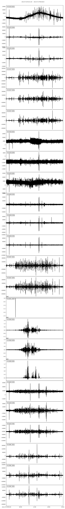

Download Seismic Data
In this notebook, we will download continuous seismic data from a public data center with obspy.
[1]:
from BPMF.config import cfg
import glob
import obspy as obs
import os
from datetime import datetime, timedelta
from obspy.clients.fdsn import mass_downloader
[2]:
DATE = obs.UTCDateTime("2012-07-26")
DATA_BUFFER_SEC = 500.
Defining and Initializing the Data Folder Architecture
[3]:
ROOTDIRPATH_DATA = cfg.INPUT_PATH
dirpath_data = os.path.join(ROOTDIRPATH_DATA, str(DATE.year), DATE.strftime("%Y%m%d"))
dirpath_raw_waveforms = os.path.join(dirpath_data, "raw")
dirpath_resp_files = os.path.join(dirpath_data, "resp")
# Create the repository if needed
if not os.path.isdir(dirpath_raw_waveforms):
os.makedirs(dirpath_raw_waveforms)
if not os.path.isdir(dirpath_resp_files):
os.makedirs(dirpath_resp_files)
Data Selection
obspy’s fdsn downloader takes a Domain and a Restrictions instances to identify the data to request from the data center.
[4]:
# Geographical restrictions
domain = mass_downloader.RectangularDomain(
minlatitude=40.60,
maxlatitude=40.76,
minlongitude=30.20,
maxlongitude=30.44,
)
# Time and station restrictions
restrictions = mass_downloader.Restrictions(
starttime=DATE - DATA_BUFFER_SEC,
endtime=DATE + timedelta(days=1.) + DATA_BUFFER_SEC,
network="YH",
location="*",
channel="BH*,HH*",
station="SAUV,SPNC,DC08,DC07,DC06,DD06,DE07,DE08",
reject_channels_with_gaps=False,
minimum_length=0.0,
minimum_interstation_distance_in_m=500.0,
channel_priorities=["HH[ZNE]", "BH[ZNE]"],
)
# Downloader instance
downloader = mass_downloader.MassDownloader(providers=["IRIS"])
[2025-09-08 15:21:22,550] - obspy.clients.fdsn.mass_downloader - INFO: Initializing FDSN client(s) for IRIS.
[2025-09-08 15:21:22,861] - obspy.clients.fdsn.mass_downloader - INFO: Successfully initialized 1 client(s): IRIS.
Download the Data
[5]:
# don't hesitate running this cell many times to make
# sure all the available data were downloaded
# some requests may fail due to busy data centers
downloader.download(
domain,
restrictions,
mseed_storage=dirpath_raw_waveforms,
stationxml_storage=dirpath_resp_files,
threads_per_client=16,
)
[2025-09-08 15:21:22,866] - obspy.clients.fdsn.mass_downloader - INFO: Total acquired or preexisting stations: 0
[2025-09-08 15:21:22,867] - obspy.clients.fdsn.mass_downloader - INFO: Client 'IRIS' - Requesting reliable availability.
[2025-09-08 15:21:23,322] - obspy.clients.fdsn.mass_downloader - INFO: Client 'IRIS' - Successfully requested availability (0.45 seconds)
[2025-09-08 15:21:23,323] - obspy.clients.fdsn.mass_downloader - INFO: Client 'IRIS' - Found 8 stations (24 channels).
[2025-09-08 15:21:23,324] - obspy.clients.fdsn.mass_downloader - INFO: Client 'IRIS' - Will attempt to download data from 8 stations.
[2025-09-08 15:21:23,330] - obspy.clients.fdsn.mass_downloader - INFO: Client 'IRIS' - Status for 24 time intervals/channels before downloading: EXISTS
[2025-09-08 15:21:23,892] - obspy.clients.fdsn.mass_downloader - INFO: Client 'IRIS' - No station information to download.
[2025-09-08 15:21:23,892] - obspy.clients.fdsn.mass_downloader - INFO: ============================== Final report
[2025-09-08 15:21:23,893] - obspy.clients.fdsn.mass_downloader - INFO: 24 MiniSEED files [229.3 MB] already existed.
[2025-09-08 15:21:23,895] - obspy.clients.fdsn.mass_downloader - INFO: 8 StationXML files [2.0 MB] already existed.
[2025-09-08 15:21:23,895] - obspy.clients.fdsn.mass_downloader - INFO: Client 'IRIS' - Acquired 0 MiniSEED files [0.0 MB].
[2025-09-08 15:21:23,895] - obspy.clients.fdsn.mass_downloader - INFO: Client 'IRIS' - Acquired 0 StationXML files [0.0 MB].
[2025-09-08 15:21:23,895] - obspy.clients.fdsn.mass_downloader - INFO: Downloaded 0.0 MB in total.
[5]:
{'IRIS': <obspy.clients.fdsn.mass_downloader.download_helpers.ClientDownloadHelper at 0x7f4afd5bfd70>}
[6]:
# check the files in DIRPATH_WAVEFORMS
glob.glob(os.path.join(dirpath_raw_waveforms, "*"))
[6]:
['../BPMF_data/2012/20120726/raw/YH.DE08..BHE__20120725T235140Z__20120727T000820Z.mseed',
'../BPMF_data/2012/20120726/raw/YH.DE07..BHN__20120725T235140Z__20120727T000820Z.mseed',
'../BPMF_data/2012/20120726/raw/YH.DE08..BHZ__20120725T235140Z__20120727T000820Z.mseed',
'../BPMF_data/2012/20120726/raw/YH.DD06..BHN__20120725T235140Z__20120727T000820Z.mseed',
'../BPMF_data/2012/20120726/raw/YH.DC07..BHZ__20120725T235140Z__20120727T000820Z.mseed',
'../BPMF_data/2012/20120726/raw/YH.SAUV..HHZ__20120725T235140Z__20120727T000820Z.mseed',
'../BPMF_data/2012/20120726/raw/YH.DC07..BHE__20120725T235140Z__20120727T000820Z.mseed',
'../BPMF_data/2012/20120726/raw/YH.SAUV..HHE__20120725T235140Z__20120727T000820Z.mseed',
'../BPMF_data/2012/20120726/raw/YH.DC08..BHN__20120725T235140Z__20120727T000820Z.mseed',
'../BPMF_data/2012/20120726/raw/YH.SPNC..BHZ__20120725T235140Z__20120727T000820Z.mseed',
'../BPMF_data/2012/20120726/raw/YH.SPNC..BHE__20120725T235140Z__20120727T000820Z.mseed',
'../BPMF_data/2012/20120726/raw/YH.DC06..BHN__20120725T235140Z__20120727T000820Z.mseed',
'../BPMF_data/2012/20120726/raw/YH.DC06..BHZ__20120725T235140Z__20120727T000820Z.mseed',
'../BPMF_data/2012/20120726/raw/YH.DC06..BHE__20120725T235140Z__20120727T000820Z.mseed',
'../BPMF_data/2012/20120726/raw/YH.DC07..BHN__20120725T235140Z__20120727T000820Z.mseed',
'../BPMF_data/2012/20120726/raw/YH.SAUV..HHN__20120725T235140Z__20120727T000820Z.mseed',
'../BPMF_data/2012/20120726/raw/YH.DC08..BHE__20120725T235140Z__20120727T000820Z.mseed',
'../BPMF_data/2012/20120726/raw/YH.DC08..BHZ__20120725T235140Z__20120727T000820Z.mseed',
'../BPMF_data/2012/20120726/raw/YH.SPNC..BHN__20120725T235140Z__20120727T000820Z.mseed',
'../BPMF_data/2012/20120726/raw/YH.DE07..BHZ__20120725T235140Z__20120727T000820Z.mseed',
'../BPMF_data/2012/20120726/raw/YH.DE08..BHN__20120725T235140Z__20120727T000820Z.mseed',
'../BPMF_data/2012/20120726/raw/YH.DE07..BHE__20120725T235140Z__20120727T000820Z.mseed',
'../BPMF_data/2012/20120726/raw/YH.DD06..BHE__20120725T235140Z__20120727T000820Z.mseed',
'../BPMF_data/2012/20120726/raw/YH.DD06..BHZ__20120725T235140Z__20120727T000820Z.mseed']
Cleanup the Downloaded Data
Even though mass_downloader.Restrictions handles channel priorities, some components might end up being downloaded at multiple channels because of failed data requests (see the output of the previous cell). To avoid data duplicate and in the interest of keeping the memory footprint low, we now remove these duplicated data.
[7]:
from fnmatch import filter as fnfilter
[8]:
# keep only HH channels when HH and BH channels were downloaded
data_list = glob.glob(os.path.join(dirpath_raw_waveforms, "*mseed"))
station_list = glob.glob(os.path.join(dirpath_resp_files, "*xml"))
for sta in station_list:
sta_id, _ = os.path.splitext(os.path.basename(sta))
print(sta_id)
BH_channels = fnfilter(data_list, os.path.join(dirpath_raw_waveforms, f"{sta_id}.*.BH*__*.mseed"))
for fname in BH_channels:
cha_info = fname[len(dirpath_raw_waveforms)+len(sta_id):]
if os.path.isfile(os.path.join(dirpath_raw_waveforms, sta_id + cha_info.replace(".BH", ".HH"))):
# the HH channel exists as well
# get rid of the BH channel
os.remove(fname)
data_list = glob.glob(os.path.join(dirpath_raw_waveforms, "*mseed"))
YH.DE07
YH.SAUV
YH.DE08
YH.SPNC
YH.DD06
YH.DC06
YH.DC08
YH.DC07
[9]:
data_list
[9]:
['../BPMF_data/2012/20120726/raw/YH.DE08..BHE__20120725T235140Z__20120727T000820Z.mseed',
'../BPMF_data/2012/20120726/raw/YH.DE07..BHN__20120725T235140Z__20120727T000820Z.mseed',
'../BPMF_data/2012/20120726/raw/YH.DE08..BHZ__20120725T235140Z__20120727T000820Z.mseed',
'../BPMF_data/2012/20120726/raw/YH.DD06..BHN__20120725T235140Z__20120727T000820Z.mseed',
'../BPMF_data/2012/20120726/raw/YH.DC07..BHZ__20120725T235140Z__20120727T000820Z.mseed',
'../BPMF_data/2012/20120726/raw/YH.SAUV..HHZ__20120725T235140Z__20120727T000820Z.mseed',
'../BPMF_data/2012/20120726/raw/YH.DC07..BHE__20120725T235140Z__20120727T000820Z.mseed',
'../BPMF_data/2012/20120726/raw/YH.SAUV..HHE__20120725T235140Z__20120727T000820Z.mseed',
'../BPMF_data/2012/20120726/raw/YH.DC08..BHN__20120725T235140Z__20120727T000820Z.mseed',
'../BPMF_data/2012/20120726/raw/YH.SPNC..BHZ__20120725T235140Z__20120727T000820Z.mseed',
'../BPMF_data/2012/20120726/raw/YH.SPNC..BHE__20120725T235140Z__20120727T000820Z.mseed',
'../BPMF_data/2012/20120726/raw/YH.DC06..BHN__20120725T235140Z__20120727T000820Z.mseed',
'../BPMF_data/2012/20120726/raw/YH.DC06..BHZ__20120725T235140Z__20120727T000820Z.mseed',
'../BPMF_data/2012/20120726/raw/YH.DC06..BHE__20120725T235140Z__20120727T000820Z.mseed',
'../BPMF_data/2012/20120726/raw/YH.DC07..BHN__20120725T235140Z__20120727T000820Z.mseed',
'../BPMF_data/2012/20120726/raw/YH.SAUV..HHN__20120725T235140Z__20120727T000820Z.mseed',
'../BPMF_data/2012/20120726/raw/YH.DC08..BHE__20120725T235140Z__20120727T000820Z.mseed',
'../BPMF_data/2012/20120726/raw/YH.DC08..BHZ__20120725T235140Z__20120727T000820Z.mseed',
'../BPMF_data/2012/20120726/raw/YH.SPNC..BHN__20120725T235140Z__20120727T000820Z.mseed',
'../BPMF_data/2012/20120726/raw/YH.DE07..BHZ__20120725T235140Z__20120727T000820Z.mseed',
'../BPMF_data/2012/20120726/raw/YH.DE08..BHN__20120725T235140Z__20120727T000820Z.mseed',
'../BPMF_data/2012/20120726/raw/YH.DE07..BHE__20120725T235140Z__20120727T000820Z.mseed',
'../BPMF_data/2012/20120726/raw/YH.DD06..BHE__20120725T235140Z__20120727T000820Z.mseed',
'../BPMF_data/2012/20120726/raw/YH.DD06..BHZ__20120725T235140Z__20120727T000820Z.mseed']
Plot the Raw Data
[10]:
traces = obs.Stream()
for fname in data_list:
traces += obs.read(fname)
traces
[10]:
24 Trace(s) in Stream:
YH.DE08..BHE | 2012-07-25T23:51:40.000000Z - 2012-07-27T00:08:20.000000Z | 50.0 Hz, 4370001 samples
...
(22 other traces)
...
YH.DD06..BHZ | 2012-07-25T23:51:40.000000Z - 2012-07-27T00:08:20.000000Z | 50.0 Hz, 4370001 samples
[Use "print(Stream.__str__(extended=True))" to print all Traces]
[11]:
%config InlineBackend.figure_formats = ["svg"]
fig = traces.plot(equal_scale=False)
